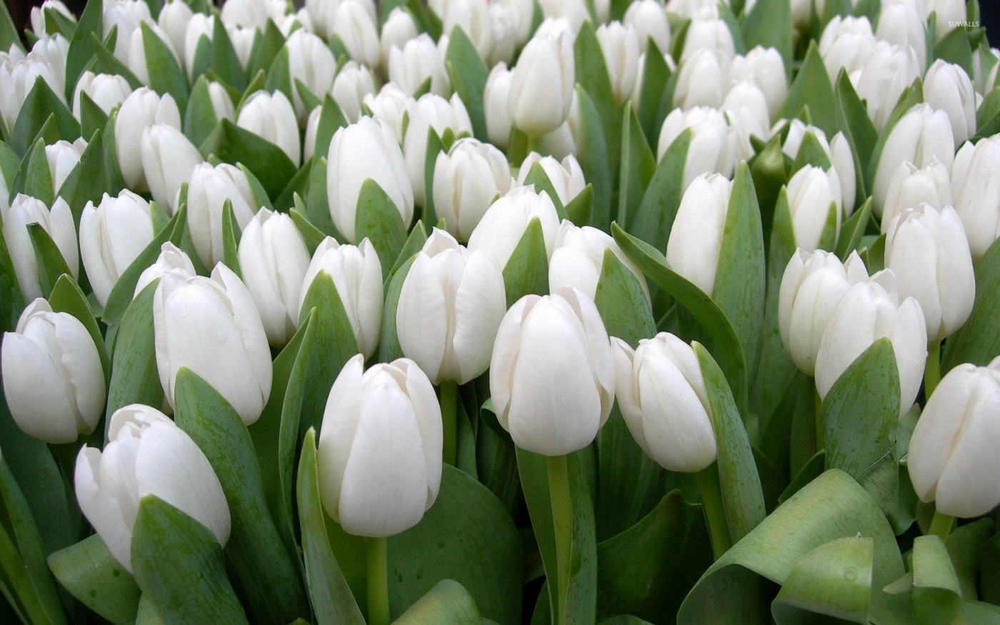
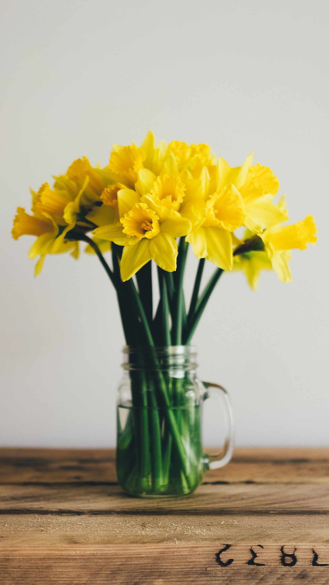
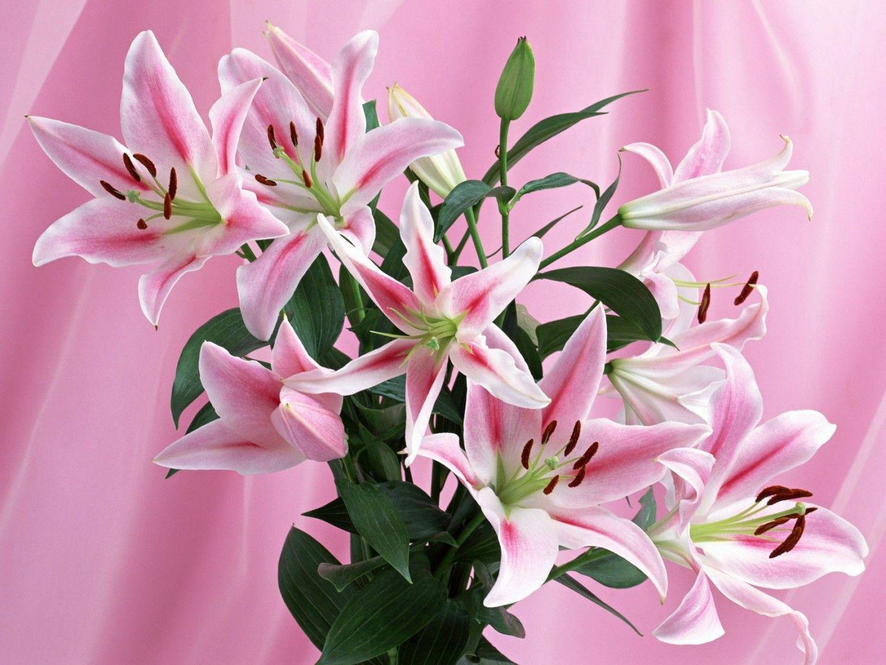
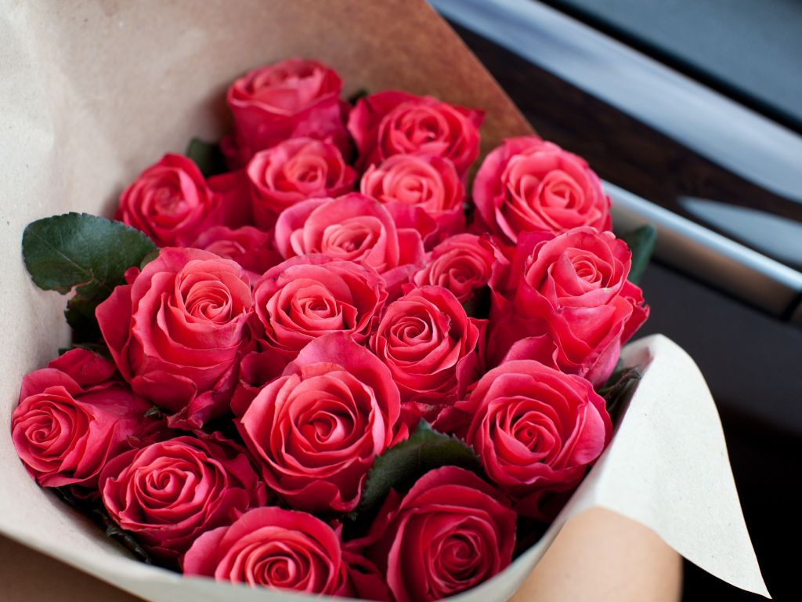
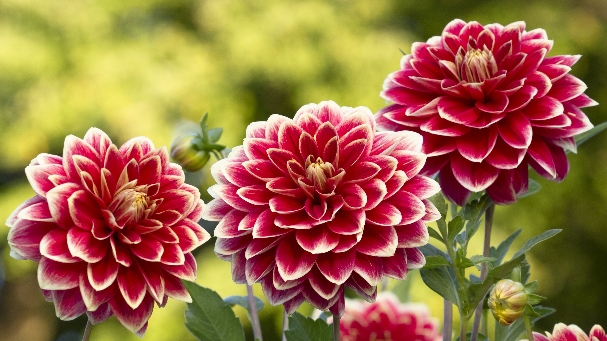
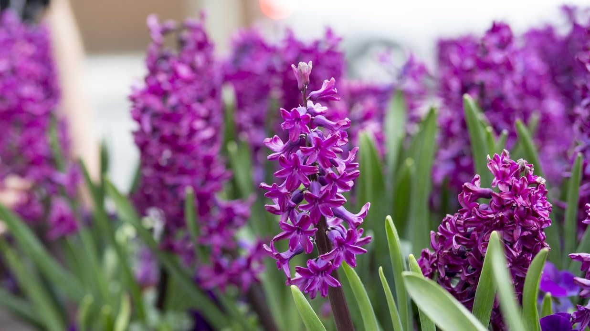
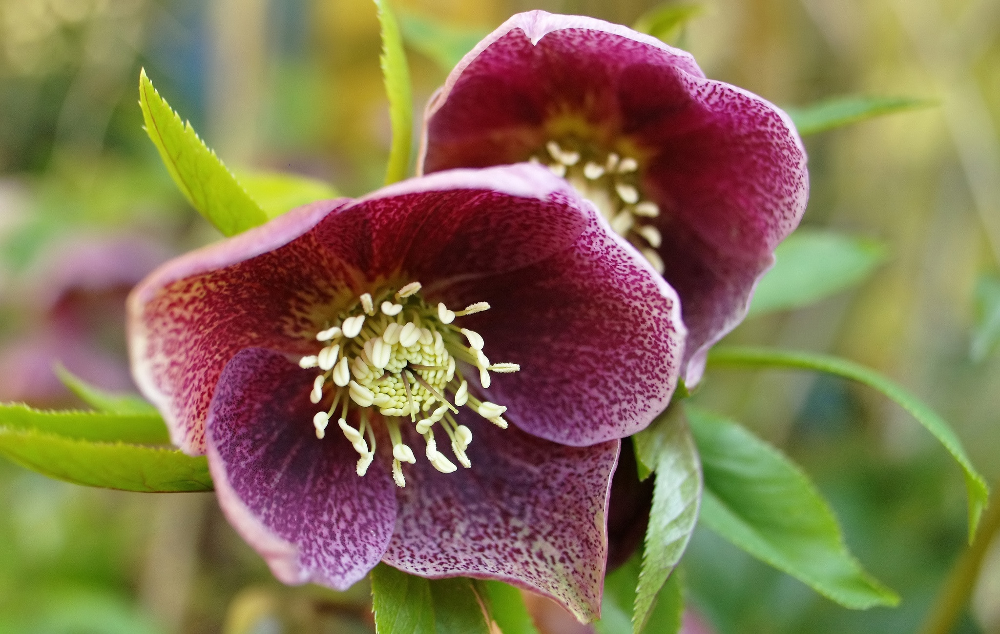

THE FLOWER OF THE HOUR
Find the perfect flower available depending on the season
SPRING
~Tulips~

Tulips normally begin emerging from the ground in late winter or early spring. If unseasonably mild weather causes premature growth in winter, the danger is not as great as it may seem. Tulips (and daffodils, too) are quite cold tolerant. If freezing winter temperatures return, it may delay growth, however. Snow is actually helpful in this case, as it can insulate the foliage from extreme cold.
To get the longest vase life, cut tulip stems diagonally, then wrap the upper two-thirds of the flowers in a funnel of newspaper and stand them in cool water for an hour or two. Then, recut the stems and the tulips will last at least a week.
FUN FACT: In the Netherlands, the third Saturday of January is National Tulip Day! Free tulips are given all over the country.
~Daffodils~

Daffodils are a hardy perennials that come back year after year, spreading and often naturalizing. They are a fall-planted bulb usually planted in October and the flowers bloom in late winter or early spring. (They are the March birth flower, after all!) Most daffodils grow easily in most regions of North America, except in the hottest, wettest areas, such as South Florida.
When cut, daffodils should be kept alone in a vase, as their stems secrete a fluid that promotes the wilting of other flowers. If you must combine them, soak them by themselves for as long as possible, then rinse them and add them to the arrangement last
FUN FACT: The ancient Greeks associated the flower with self-love, while in Victorian England, daffodils were given as gifts to express admiration and respect. In literature, the daffodil is often used as a symbol of unrequited love and hope.
SUMMER
~Lillies~

Lilies have six plain or strikingly marked tepals (“petals”) and are often trumpet-shaped, sitting atop a tall, erect stem with narrow, long, lance-shaped leaves. They come in many beautiful colors, including pink, gold, red, orange, and white.
Lilies make wonderful cut flowers. However, avoid cutting off more than a third of the stem. Taking more than that can reduce the plant’s vigor and longevity, since the plant needs its foliage to create energy.
Before arranging in a vase, remove the lower leaves on the stems so that no foliage will be underwater.
A good lily arrangement will last two or more weeks. Change the water every few days.
To help prolong the flowers’ life, add cut-flower food to the water. Lilies require only half the amount of food recommended for other flowers.
FUN FACT: Unfortunately, several types of lilies have been found to be deadly to cats. Even small amount of pollen can induce poisoning in cats.
~Roses~

June’s birth flower is the rose! And it’s not surprising as rose shrubs are often at their very best during this month, but many types will flower from late May through early fall.
To keep the roses fresh, the vase needs to be filled with water in which the roses will be immersed. Roses need at least one inch of cool (room temperature) water every day. Make sure that the water does not touch the bottom stem but only touches the outer petals, which can help them stay fresh and beautiful longer.
If there isn't enough room for them to breathe, the roses will begin to wilt and die much faster, beginning with the guard petals protecting the bloom.
Rose water is a refreshing skin splash. Try a flower facial! Gentle, aromatic steam cleanses your pores. For oily skin, add a few rose petals to boiling water in a heatproof bowl. Make a bath towel tent and lean your face about 10 inches above the water. It should feel warm, not hot. After 10 minutes, rinse your face with cool water, then blot dry.
FUN FACT:In the 17th century, kings and queens considered roses legal tender for purchases.
And I will make thee beds of roses,
And a thousand fragrant posies.
–Christopher Marlowe (1564-93)
AUTOMN
~Dahlias~

Picking a favorite dahlia is like going through a button box. The flowers can range in size from petite 2-inch lollipop-style pompoms to giant 15-inch “dinner plates.” Most varieties grow 4 to 5 feet tall. Plus, dahlias grow in a wide range of beautiful colors, including white, yellow, orange, pink, dark pink, red, dark red, lavender, purple and black, light blend, bronze, flame, dark blend, variegated and bicolor!
The more you cut dahlias, the more they’ll bloom! For a bouquet, cut stems in the morning before the heat of the day and put them into a bucket of cool water. Remove stems’ bottom leaves and place the flowers into a vase of water. Place the vase in a cool spot and out of direct sun. Check the water daily. Vase life is about 7 days.
FUN FACT: Dahlia flowers come in every color but blue. In the nineteenth century, a London newspaper offered £1 to the first breeder to create a blue dahlia—the reward has never been claimed.
The Dahlia you brought to our isle
Your praises forever shall speak
‘Mid gardens as sweet as your smile
And colour as bright as your cheek.
–Lord Holland (1773–1840)
~Sunflowers~
Perennial sunflowers bloom for a period of 8-12 weeks with some beginning as early as July and others finishing as late as October.
For indoor bouquets, cut the main stem just before its flower bud has a chance to open to encourage side blooms.
Cut stems early in the morning. Harvesting flowers during middle of the day may lead to flower wilting.
Handle sunflowers gently. The flowers should last at least a week in water at room temperature.
Arrange sunflowers in tall containers that provide good support for their heavy heads, and change the water every day to keep them fresh.
FUN FACT:An anonymous buyer paid over $39 million in 1987 for Vincent van Gogh’s Sunflowers.
WINTER
~Hyacinths~

They may be spring flowers, but hyacinths are one the best flowers to grow indoor during cold winters.
Do NOT overwater hyacinth. They do not like stand water or to have “wet feet.” Water ONLY if the soil is dry at a depth of 3 inches. If it is dry at that depth, it is time to water.
Bulbs are usually planted in individual pots about 10cm in diameter. If a larger pot for several hyacinths is used, the bulbs should sit close together, but not touch. It is possible to use any reasonable garden soil, but ideally it should be sandy and not too rich, for example, a mixture of two parts of garden soil, one part compost and half a part sand.
Fill the pot loosely with soil, put the bulb on top at the centre of the pot and gently press it into the soil. Firm the soil around it and, if necessary, add more soil, so that only the upper part of the bulb is exposed. The top of the bulb should be level with the edges of the pot, leaving space for watering, that can be also later filled with moss or bark chippings for a more attractive look.
Water the pot thoroughly and cover with an empty smaller pot. Or alternatively, several pots can be placed in a container and covered with about 5cm of bark chippings.
Put in a dark cold place (below 9C), such as a garage or shed.
FUN FACT: The French have been known for using hyacinths in the past for poisoning others. They would spray the flowers with poison and then place in the bedroom of their victim.
~Hellebores~

A flower that blooms in winter, the hellebore really steals the show as it pokes through the snow.
They will bloom from early winter through June—and as long as they receive a good water source soon after cutting, they can last in a vase for several weeks.
Hellebores do well in deep water, so fill the vase almost to the top. This creates pressure, which pushes hydration up the stems. To prep a new stem, either give the base a long diagonal cut and then dip it in Quick Dip before placing in the full vase, or make small, gentle scoring marks down the length of the stem with a X-Acto knife to open access to the xylem and allow for speedy water uptake.
After proper care, enjoy cut hellebores for 17 days on average!
FUN FACT: Helleborus niger is commonly called the Christmas rose, due to an old legend that it sprouted in the snow from the tears of a young girl who had no gift to give the Christ child in Bethlehem.
Want to become a floral expert? Sign up for the Flhour monthly Newsletter here